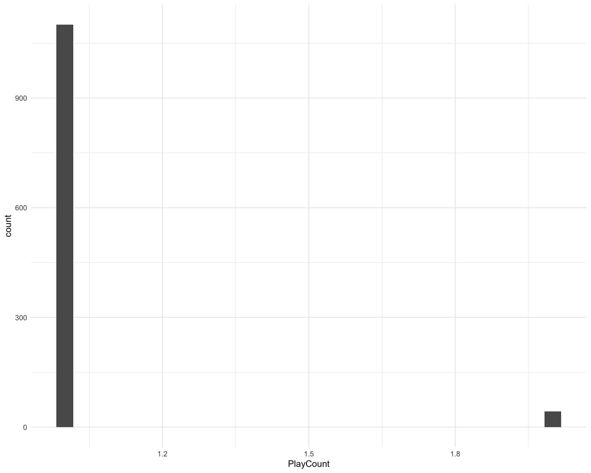
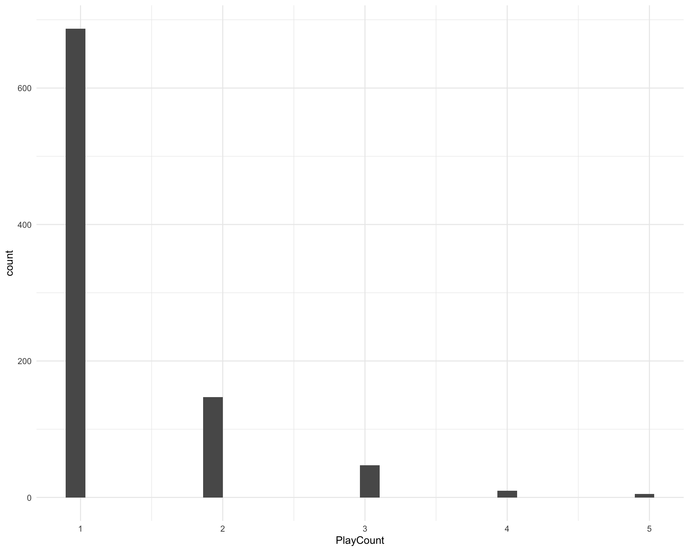
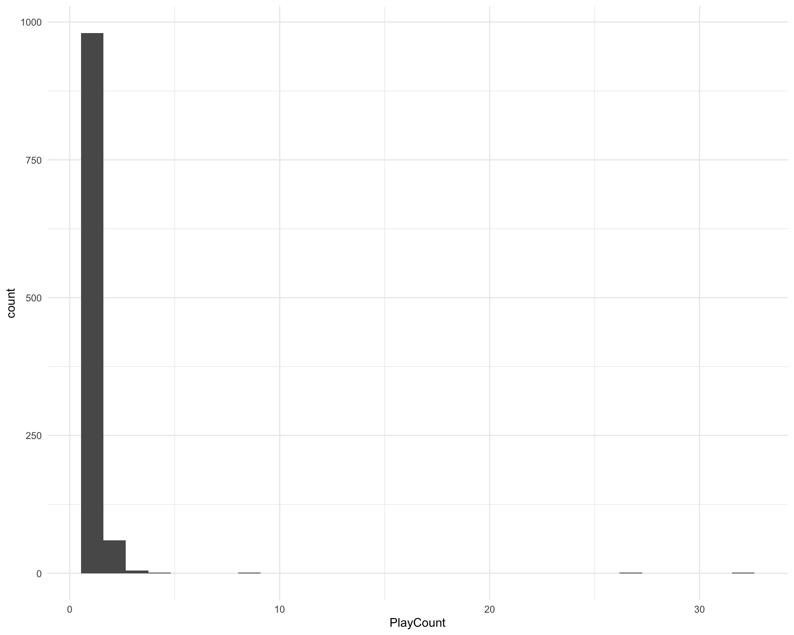
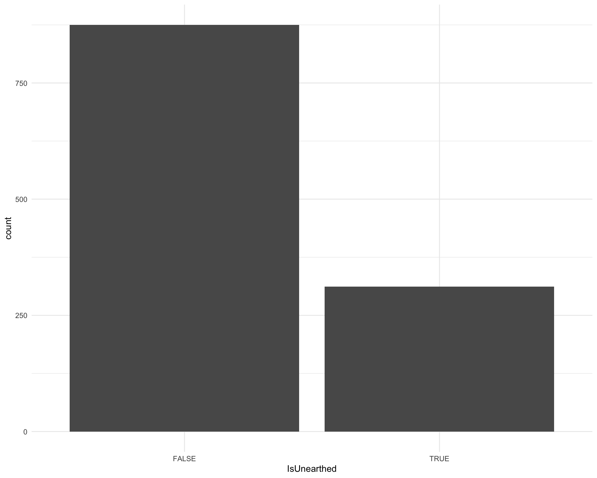
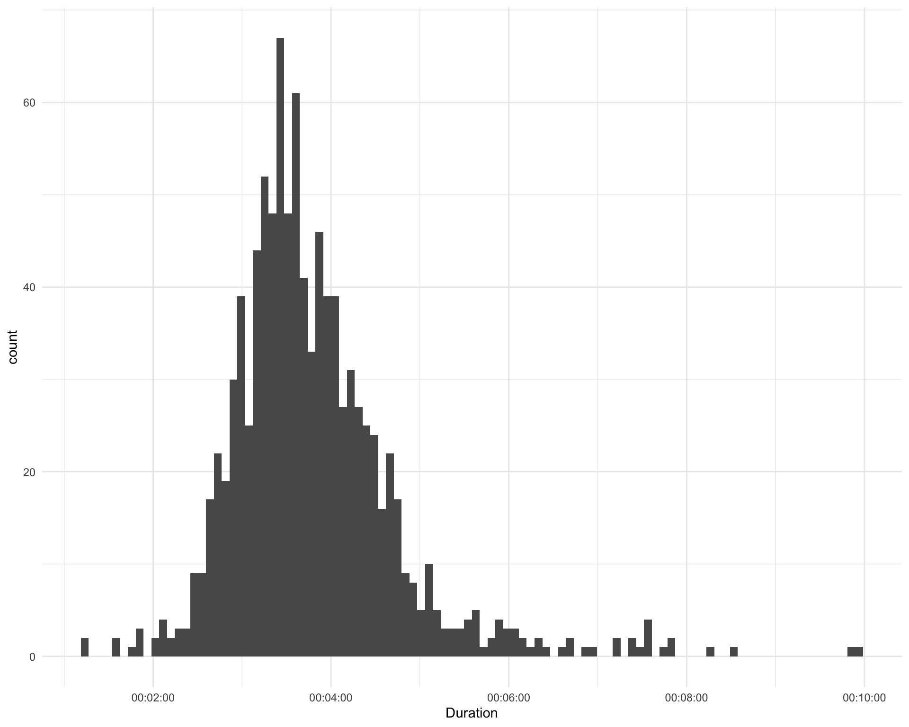
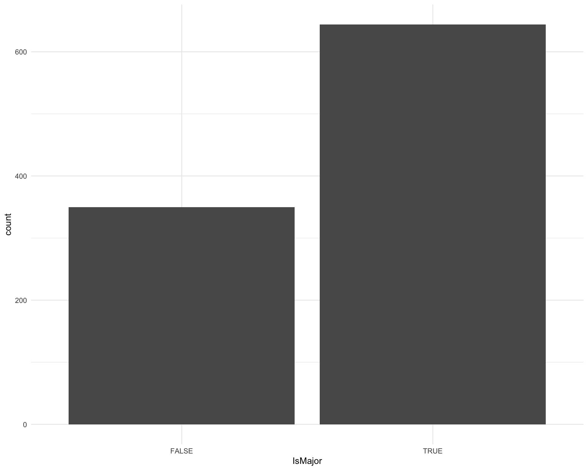
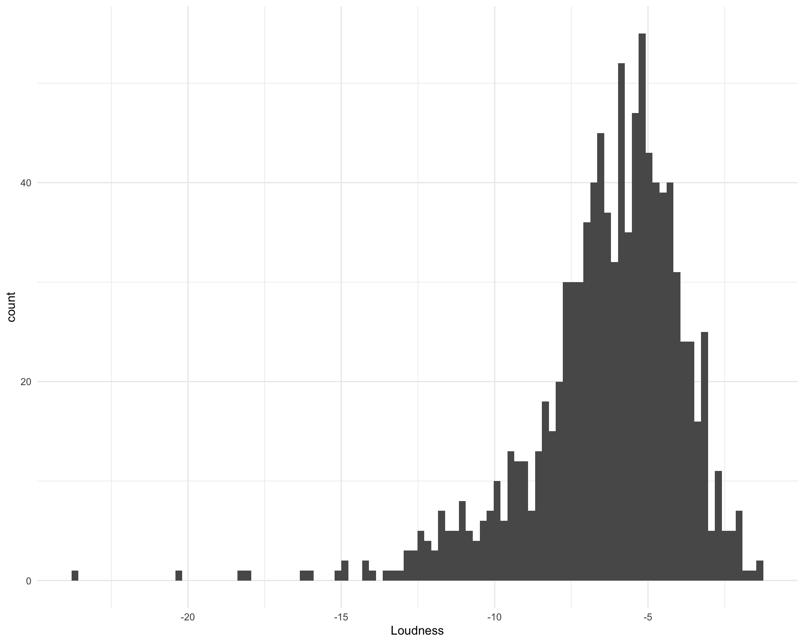
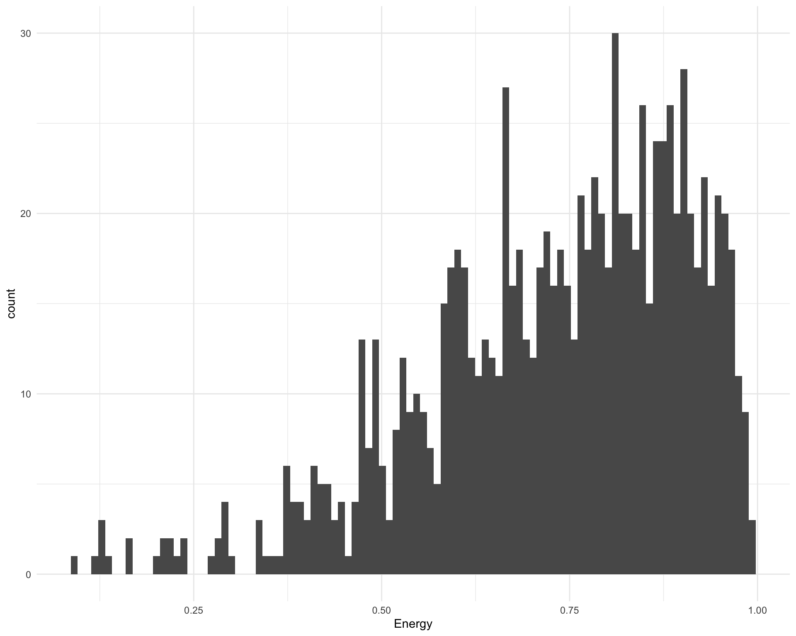
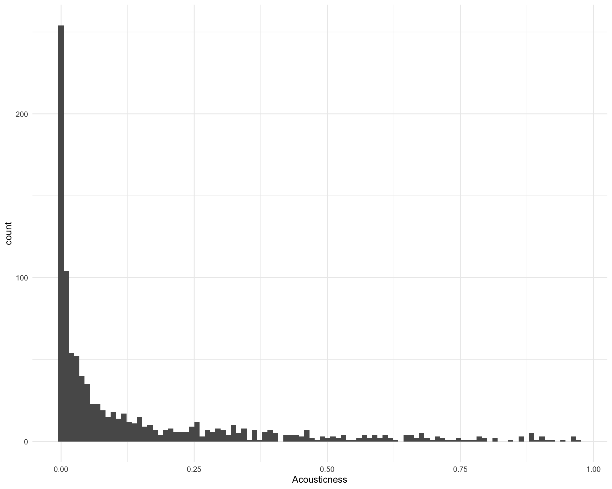
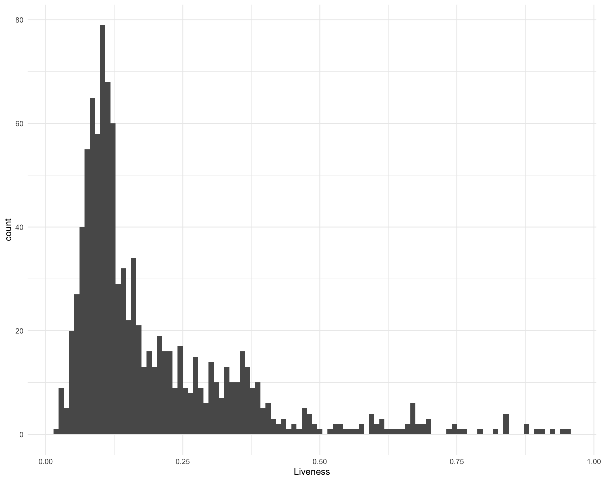

Exploration
Last updated: 2020-06-01
Checks: 7 0
Knit directory: requestival/
This reproducible R Markdown analysis was created with workflowr (version 1.6.2). The Checks tab describes the reproducibility checks that were applied when the results were created. The Past versions tab lists the development history.
Great! Since the R Markdown file has been committed to the Git repository, you know the exact version of the code that produced these results.
Great job! The global environment was empty. Objects defined in the global environment can affect the analysis in your R Markdown file in unknown ways. For reproduciblity it’s best to always run the code in an empty environment.
The command set.seed(20200529) was run prior to running the code in the R Markdown file. Setting a seed ensures that any results that rely on randomness, e.g. subsampling or permutations, are reproducible.
Great job! Recording the operating system, R version, and package versions is critical for reproducibility.
Nice! There were no cached chunks for this analysis, so you can be confident that you successfully produced the results during this run.
Great job! Using relative paths to the files within your workflowr project makes it easier to run your code on other machines.
Great! You are using Git for version control. Tracking code development and connecting the code version to the results is critical for reproducibility.
The results in this page were generated with repository version 8f40292. See the Past versions tab to see a history of the changes made to the R Markdown and HTML files.
Note that you need to be careful to ensure that all relevant files for the analysis have been committed to Git prior to generating the results (you can use wflow_publish or wflow_git_commit). workflowr only checks the R Markdown file, but you know if there are other scripts or data files that it depends on. Below is the status of the Git repository when the results were generated:
Ignored files:
Ignored: .Rhistory
Ignored: .Rproj.user/
Ignored: code/_spotify_secrets.R
Ignored: data/.DS_Store
Ignored: data/raw/.DS_Store
Ignored: data/raw/requestival_24_files/
Ignored: data/raw/requestival_25_files/
Ignored: data/raw/requestival_26_files/
Ignored: data/raw/requestival_27_files/
Ignored: data/raw/requestival_28_files/
Ignored: data/raw/requestival_29_files/
Ignored: data/raw/requestival_30_files/
Ignored: data/raw/requestival_31_files/
Ignored: output/01-scraping.Rmd/
Ignored: output/02-tidying.Rmd/
Ignored: output/03-augmentation.Rmd/
Ignored: output/04-exploration.Rmd/
Ignored: renv/library/
Ignored: renv/staging/
Untracked files:
Untracked: data/raw/requestival_29.html
Untracked: data/raw/requestival_30.html
Untracked: data/raw/requestival_31.html
Unstaged changes:
Modified: data/01-requestival-scraped.tsv
Modified: data/02-requestival-tidied.tsv
Modified: data/03-requestival-augmented.tsv
Note that any generated files, e.g. HTML, png, CSS, etc., are not included in this status report because it is ok for generated content to have uncommitted changes.
These are the previous versions of the repository in which changes were made to the R Markdown (analysis/04-exploration.Rmd) and HTML (docs/04-exploration.html) files. If you’ve configured a remote Git repository (see ?wflow_git_remote), click on the hyperlinks in the table below to view the files as they were in that past version.
| File | Version | Author | Date | Message |
|---|---|---|---|---|
| Rmd | 8f40292 | Luke Zappia | 2020-05-31 | Add exploration |
| html | 8f40292 | Luke Zappia | 2020-05-31 | Add exploration |
source(here::here("code", "setup.R"))Introduction
In this document we are going to do some basic exploration of the complete augmented dataset. We will work through each column make some basics plots and and summaries. This should have to give us a better sense of the data but might also expose any mistakes we made during the pre-processing stages.
requestival <- read_tsv(
PATHS$augmented,
col_types = cols(
.default = col_double(),
DateTime = col_datetime(format = ""),
Song = col_character(),
Artist = col_character(),
Release = col_character(),
IsUnearthed = col_logical(),
UnearthedURL = col_character(),
SpotifyQuery = col_character(),
SpotifyURL = col_character(),
YouTubeQuery = col_character(),
YouTubeURL = col_character(),
SpotifyID = col_character(),
HasSpotify = col_logical(),
AlbumDate = col_date(format = ""),
Explicit = col_logical(),
IsMajor = col_logical()
)
) %>%
mutate(DateTime = with_tz(DateTime, "Australia/Sydney"))Chunk time: 0.05 secs
The dataset has 1187 rows and 25 columns.
1 Triple J features
Let’s start with the features we scraped from the HTML files.
1.1 DateTime
When were the songs played?
ggplot(requestival, aes(x = DateTime)) +
geom_histogram(bins = 200)
| Version | Author | Date |
|---|---|---|
| 8f40292 | Luke Zappia | 2020-05-31 |
Chunk time: 0.63 secs
1.2 Song
There are 1128 unique songs. How many times was each song played?
song_counts <- requestival %>%
group_by(Song, Artist) %>%
count(name = "PlayCount")
ggplot(song_counts, aes(x = PlayCount)) +
geom_histogram()
| Version | Author | Date |
|---|---|---|
| 8f40292 | Luke Zappia | 2020-05-31 |
Chunk time: 0.36 secs
Which songs were played more than once?
song_counts %>%
filter(PlayCount > 1) %>%
arrange(-PlayCount)Chunk time: 0.02 secs
1.3 Artist
There are 896 unique artists. How many times was each artist played?
artist_counts <- requestival %>%
group_by(Artist) %>%
count(name = "PlayCount")
ggplot(artist_counts, aes(x = PlayCount)) +
geom_histogram()
| Version | Author | Date |
|---|---|---|
| 8f40292 | Luke Zappia | 2020-05-31 |
Chunk time: 0.27 secs
Which artists were played more than once?
artist_counts %>%
filter(PlayCount > 1) %>%
arrange(-PlayCount)Chunk time: 0.05 secs
1.4 Release
There are 1049 unique releases. How many times was each release played?
release_counts <- requestival %>%
group_by(Release) %>%
count(name = "PlayCount")
ggplot(release_counts, aes(x = PlayCount)) +
geom_histogram()
| Version | Author | Date |
|---|---|---|
| 8f40292 | Luke Zappia | 2020-05-31 |
Chunk time: 0.31 secs
Which releases were played more than once?
release_counts %>%
filter(PlayCount > 1) %>%
arrange(-PlayCount)Chunk time: 0.01 secs
Which songs do not have an associated release?
requestival %>%
filter(is.na(Release)) %>%
select(DateTime, Song, Artist)Chunk time: 0.02 secs
This seems weird but I have checked them and this information is missing from the original HTML pages. It’s only a few songs so I’m not going to try and fix it.
1.5 Unearthed
How many songs are on Unearthed?
ggplot(requestival, aes(x = IsUnearthed)) +
geom_bar()
| Version | Author | Date |
|---|---|---|
| 8f40292 | Luke Zappia | 2020-05-31 |
Chunk time: 0.26 secs
2 Spotify
Now let’s looks at the fields we downloaded from Spotify. How many songs did we find Spotify track IDs for?
ggplot(requestival, aes(x = HasSpotify)) +
geom_bar()
| Version | Author | Date |
|---|---|---|
| 8f40292 | Luke Zappia | 2020-05-31 |
Chunk time: 0.24 secs
For the rest of this section we will only look at the songs with Spotify information.
requestival_spotify <- filter(requestival, HasSpotify)Chunk time: 0.01 secs
2.1 Album date
When we the songs released? This is the album release date so may not be the earliest song release depending on which album we got from Spotify.
ggplot(requestival_spotify, aes(x = AlbumDate)) +
geom_histogram()
| Version | Author | Date |
|---|---|---|
| 8f40292 | Luke Zappia | 2020-05-31 |
Chunk time: 0.27 secs
The five most recent songs are:
requestival_spotify %>%
arrange(desc(AlbumDate)) %>%
top_n(5, AlbumDate) %>%
select(Song, Artist, Release, AlbumDate)Chunk time: 0.01 secs
The five oldest songs are:
requestival_spotify %>%
arrange(AlbumDate) %>%
top_n(-5, AlbumDate) %>%
select(Song, Artist, Release, AlbumDate)Chunk time: 0.31 secs
2.2 Duration
How long are the songs?
ggplot(requestival_spotify, aes(x = Duration)) +
geom_histogram(bins = 100) +
scale_x_time()
| Version | Author | Date |
|---|---|---|
| 8f40292 | Luke Zappia | 2020-05-31 |
Chunk time: 0.31 secs
The five longest songs are:
requestival_spotify %>%
arrange(-Duration) %>%
top_n(5, Duration) %>%
select(Song, Artist, Duration)Chunk time: 0.01 secs
The five shortest songs are:
requestival_spotify %>%
arrange(Duration) %>%
top_n(-5, Duration) %>%
select(Song, Artist, Duration)Chunk time: 0.01 secs
2.3 Explicit
How many songs are explicit?
ggplot(requestival_spotify, aes(x = Explicit)) +
geom_bar()
| Version | Author | Date |
|---|---|---|
| 8f40292 | Luke Zappia | 2020-05-31 |
Chunk time: 0.26 secs
2.4 Popularity
What is the distribution of popularity scores?
ggplot(requestival_spotify, aes(x = Popularity)) +
geom_bar()
| Version | Author | Date |
|---|---|---|
| 8f40292 | Luke Zappia | 2020-05-31 |
Chunk time: 0.3 secs
The five most “popular” songs are:
requestival_spotify %>%
arrange(-Popularity) %>%
top_n(5, Popularity) %>%
select(Song, Artist, Popularity)Chunk time: 0.01 secs
The five least “popular” songs are:
requestival_spotify %>%
arrange(Popularity) %>%
top_n(-5, Popularity) %>%
select(Song, Artist, Popularity)Chunk time: 0.01 secs
2.5 IsMajor
How many songs are in a major key?
ggplot(requestival_spotify, aes(x = IsMajor)) +
geom_bar()
| Version | Author | Date |
|---|---|---|
| 8f40292 | Luke Zappia | 2020-05-31 |
Chunk time: 0.23 secs
2.6 Loudness
What is the distribution of loudness?
ggplot(requestival_spotify, aes(x = Loudness)) +
geom_histogram(bins = 100)
| Version | Author | Date |
|---|---|---|
| 8f40292 | Luke Zappia | 2020-05-31 |
Chunk time: 0.3 secs
The five loudest songs are:
requestival_spotify %>%
arrange(-Loudness) %>%
top_n(5, Loudness) %>%
select(Song, Artist, Loudness)Chunk time: 0.01 secs
The five quietest songs are:
requestival_spotify %>%
arrange(Loudness) %>%
top_n(-5, Loudness) %>%
select(Song, Artist, Loudness)Chunk time: 0.01 secs
2.7 Temp
What speed are the songs?
ggplot(requestival_spotify, aes(x = Tempo)) +
geom_histogram(bins = 100)
| Version | Author | Date |
|---|---|---|
| 8f40292 | Luke Zappia | 2020-05-31 |
Chunk time: 0.32 secs
The five fastest songs are:
requestival_spotify %>%
arrange(-Tempo) %>%
top_n(5, Tempo) %>%
select(Song, Artist, Tempo)Chunk time: 0.01 secs
The five slowest songs are:
requestival_spotify %>%
arrange(Tempo) %>%
top_n(-5, Tempo) %>%
select(Song, Artist, Tempo)Chunk time: 0.01 secs
2.8 Valence
What is the distribution of valence? This is score from zero to one where one is positive and zero is negative.
ggplot(requestival_spotify, aes(x = Valence)) +
geom_histogram(bins = 100)
| Version | Author | Date |
|---|---|---|
| 8f40292 | Luke Zappia | 2020-05-31 |
Chunk time: 0.34 secs
The five most positive songs are:
requestival_spotify %>%
arrange(-Valence) %>%
top_n(5, Valence) %>%
select(Song, Artist, Valence)Chunk time: 0.01 secs
The five most negative songs are:
requestival_spotify %>%
arrange(Valence) %>%
top_n(-5, Valence) %>%
select(Song, Artist, Valence)Chunk time: 0.01 secs
2.9 Energy
What is the distribution of energy?
ggplot(requestival_spotify, aes(x = Energy)) +
geom_histogram(bins = 100)
| Version | Author | Date |
|---|---|---|
| 8f40292 | Luke Zappia | 2020-05-31 |
Chunk time: 0.33 secs
The five most energetic songs are:
requestival_spotify %>%
arrange(-Energy) %>%
top_n(5, Energy) %>%
select(Song, Artist, Energy)Chunk time: 0.01 secs
The five least energetic songs are:
requestival_spotify %>%
arrange(Energy) %>%
top_n(-5, Energy) %>%
select(Song, Artist, Energy)Chunk time: 0.01 secs
2.10 Danceability
What is the distribution of danceability?
ggplot(requestival_spotify, aes(x = Danceability)) +
geom_histogram(bins = 100)
| Version | Author | Date |
|---|---|---|
| 8f40292 | Luke Zappia | 2020-05-31 |
Chunk time: 0.31 secs
The five most danceable songs are:
requestival_spotify %>%
arrange(-Danceability) %>%
top_n(5, Danceability) %>%
select(Song, Artist, Danceability)Chunk time: 0.01 secs
The five least danceable songs are:
requestival_spotify %>%
arrange(Danceability) %>%
top_n(-5, Danceability) %>%
select(Song, Artist, Danceability)Chunk time: 0.01 secs
2.11 Speechiness
What is the distribution of speechiness?
ggplot(requestival_spotify, aes(x = Speechiness)) +
geom_histogram(bins = 100)
| Version | Author | Date |
|---|---|---|
| 8f40292 | Luke Zappia | 2020-05-31 |
Chunk time: 0.32 secs
The five most speechy songs are:
requestival_spotify %>%
arrange(-Speechiness) %>%
top_n(5, Speechiness) %>%
select(Song, Artist, Speechiness)Chunk time: 0.01 secs
The five least speechy songs are:
requestival_spotify %>%
arrange(Speechiness) %>%
top_n(-5, Speechiness) %>%
select(Song, Artist, Speechiness)Chunk time: 0.01 secs
2.12 Acousticness
What is the distribution of acousticness?
ggplot(requestival_spotify, aes(x = Acousticness)) +
geom_histogram(bins = 100)
| Version | Author | Date |
|---|---|---|
| 8f40292 | Luke Zappia | 2020-05-31 |
Chunk time: 0.33 secs
The five most acoustic songs are:
requestival_spotify %>%
arrange(-Acousticness) %>%
top_n(5, Acousticness) %>%
select(Song, Artist, Acousticness)Chunk time: 0.01 secs
The five least acoustic are:
requestival_spotify %>%
arrange(Acousticness) %>%
top_n(-5, Acousticness) %>%
select(Song, Artist, Acousticness)Chunk time: 0.01 secs
2.13 Liveness
What is the distribution of liveness?
ggplot(requestival_spotify, aes(x = Liveness)) +
geom_histogram(bins = 100)
| Version | Author | Date |
|---|---|---|
| 8f40292 | Luke Zappia | 2020-05-31 |
Chunk time: 0.34 secs
The five most live songs are:
requestival_spotify %>%
arrange(-Liveness) %>%
top_n(5, Liveness) %>%
select(Song, Artist, Liveness)Chunk time: 0.01 secs
The five least live songs are:
requestival_spotify %>%
arrange(Liveness) %>%
top_n(-5, Liveness) %>%
select(Song, Artist, Liveness)Chunk time: 0.01 secs
sessioninfo::session_info()─ Session info ───────────────────────────────────────────────────────────────
setting value
version R version 4.0.0 (2020-04-24)
os macOS Catalina 10.15.4
system x86_64, darwin17.0
ui X11
language (EN)
collate en_US.UTF-8
ctype en_US.UTF-8
tz Europe/Berlin
date 2020-06-01
─ Packages ───────────────────────────────────────────────────────────────────
! package * version date lib source
P assertthat 0.2.1 2019-03-21 [?] CRAN (R 4.0.0)
P backports 1.1.7 2020-05-13 [?] CRAN (R 4.0.0)
P base64enc 0.1-3 2015-07-28 [?] CRAN (R 4.0.0)
P blob 1.2.1 2020-01-20 [?] CRAN (R 4.0.0)
P broom 0.5.6 2020-04-20 [?] CRAN (R 4.0.0)
P cellranger 1.1.0 2016-07-27 [?] standard (@1.1.0)
P cli 2.0.2 2020-02-28 [?] CRAN (R 4.0.0)
P colorspace 1.4-1 2019-03-18 [?] standard (@1.4-1)
P conflicted * 1.0.4 2019-06-21 [?] standard (@1.0.4)
P crayon 1.3.4 2017-09-16 [?] CRAN (R 4.0.0)
P DBI 1.1.0 2019-12-15 [?] CRAN (R 4.0.0)
P dbplyr 1.4.4 2020-05-27 [?] CRAN (R 4.0.0)
P digest 0.6.25 2020-02-23 [?] CRAN (R 4.0.0)
P dplyr * 0.8.5 2020-03-07 [?] CRAN (R 4.0.0)
P ellipsis 0.3.1 2020-05-15 [?] CRAN (R 4.0.0)
P evaluate 0.14 2019-05-28 [?] standard (@0.14)
P fansi 0.4.1 2020-01-08 [?] CRAN (R 4.0.0)
P farver 2.0.3 2020-01-16 [?] CRAN (R 4.0.0)
P forcats * 0.5.0 2020-03-01 [?] CRAN (R 4.0.0)
P fs * 1.4.1 2020-04-04 [?] CRAN (R 4.0.0)
P generics 0.0.2 2018-11-29 [?] standard (@0.0.2)
P genius 2.2.2 2020-05-28 [?] CRAN (R 4.0.0)
P ggplot2 * 3.3.1 2020-05-28 [?] CRAN (R 4.0.0)
P git2r 0.27.1 2020-05-03 [?] CRAN (R 4.0.0)
P glue * 1.4.1 2020-05-13 [?] CRAN (R 4.0.0)
P gtable 0.3.0 2019-03-25 [?] standard (@0.3.0)
P haven 2.3.0 2020-05-24 [?] CRAN (R 4.0.0)
P here * 0.1 2017-05-28 [?] standard (@0.1)
P hms 0.5.3 2020-01-08 [?] CRAN (R 4.0.0)
P htmltools 0.4.0 2019-10-04 [?] standard (@0.4.0)
P httpuv 1.5.3.1 2020-05-26 [?] CRAN (R 4.0.0)
P httr 1.4.1 2019-08-05 [?] standard (@1.4.1)
P janeaustenr 0.1.5 2017-06-10 [?] CRAN (R 4.0.0)
P jsonlite 1.6.1 2020-02-02 [?] CRAN (R 4.0.0)
P knitr 1.28 2020-02-06 [?] CRAN (R 4.0.0)
P labeling 0.3 2014-08-23 [?] standard (@0.3)
P later 1.0.0 2019-10-04 [?] standard (@1.0.0)
P lattice 0.20-41 2020-04-02 [3] CRAN (R 4.0.0)
P lifecycle 0.2.0 2020-03-06 [?] CRAN (R 4.0.0)
P lubridate * 1.7.8 2020-04-06 [?] CRAN (R 4.0.0)
P magrittr 1.5 2014-11-22 [?] CRAN (R 4.0.0)
P Matrix 1.2-18 2019-11-27 [3] CRAN (R 4.0.0)
P memoise 1.1.0 2017-04-21 [?] standard (@1.1.0)
P modelr 0.1.8 2020-05-19 [?] CRAN (R 4.0.0)
P munsell 0.5.0 2018-06-12 [?] standard (@0.5.0)
P nlme 3.1-147 2020-04-13 [3] CRAN (R 4.0.0)
P pillar 1.4.4 2020-05-05 [?] CRAN (R 4.0.0)
P pkgconfig 2.0.3 2019-09-22 [?] CRAN (R 4.0.0)
P plyr 1.8.6 2020-03-03 [?] CRAN (R 4.0.0)
P promises 1.1.0 2019-10-04 [?] standard (@1.1.0)
P purrr * 0.3.4 2020-04-17 [?] CRAN (R 4.0.0)
P R6 2.4.1 2019-11-12 [?] CRAN (R 4.0.0)
P Rcpp 1.0.4.6 2020-04-09 [?] CRAN (R 4.0.0)
P readr * 1.3.1 2018-12-21 [?] standard (@1.3.1)
P readxl 1.3.1 2019-03-13 [?] standard (@1.3.1)
P reprex 0.3.0 2019-05-16 [?] standard (@0.3.0)
P reshape2 1.4.4 2020-04-09 [?] CRAN (R 4.0.0)
P rlang 0.4.6 2020-05-02 [?] CRAN (R 4.0.0)
P rmarkdown 2.1 2020-01-20 [?] CRAN (R 4.0.0)
P rprojroot 1.3-2 2018-01-03 [?] CRAN (R 4.0.0)
P rstudioapi 0.11 2020-02-07 [?] CRAN (R 4.0.0)
P rvest * 0.3.5 2019-11-08 [?] standard (@0.3.5)
P scales 1.1.1 2020-05-11 [?] CRAN (R 4.0.0)
sessioninfo 1.1.1 2018-11-05 [3] CRAN (R 4.0.0)
P SnowballC 0.7.0 2020-04-01 [?] CRAN (R 4.0.0)
P spotifyr * 2.1.1 2019-07-13 [?] CRAN (R 4.0.0)
P stringi 1.4.6 2020-02-17 [?] CRAN (R 4.0.0)
P stringr * 1.4.0 2019-02-10 [?] CRAN (R 4.0.0)
P tibble * 3.0.1 2020-04-20 [?] CRAN (R 4.0.0)
P tidyr * 1.1.0 2020-05-20 [?] CRAN (R 4.0.0)
P tidyselect 1.1.0 2020-05-11 [?] CRAN (R 4.0.0)
P tidytext 0.2.4 2020-04-17 [?] CRAN (R 4.0.0)
P tidyverse * 1.3.0 2019-11-21 [?] standard (@1.3.0)
P tokenizers 0.2.1 2018-03-29 [?] CRAN (R 4.0.0)
P vctrs 0.3.0 2020-05-11 [?] CRAN (R 4.0.0)
P whisker 0.4 2019-08-28 [?] standard (@0.4)
P withr 2.2.0 2020-04-20 [?] CRAN (R 4.0.0)
P workflowr 1.6.2 2020-04-30 [?] CRAN (R 4.0.0)
P xfun 0.14 2020-05-20 [?] CRAN (R 4.0.0)
P xml2 * 1.3.2 2020-04-23 [?] CRAN (R 4.0.0)
P yaml 2.2.1 2020-02-01 [?] CRAN (R 4.0.0)
[1] /Users/luke.zappia/Documents/Projects/requestival/renv/library/R-4.0/x86_64-apple-darwin17.0
[2] /private/var/folders/rj/60lhr791617422kqvh0r4vy40000gn/T/RtmpQWp4dI/renv-system-library
[3] /Library/Frameworks/R.framework/Versions/4.0/Resources/library
P ── Loaded and on-disk path mismatch.Chunk time: 0.2 secs